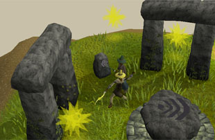
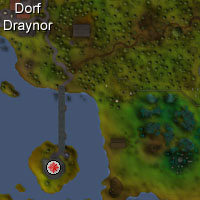
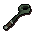
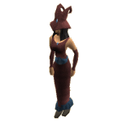
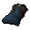
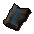
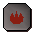

")
Das große Rumkugeln
Einführung | Lage | Voraussetzungen | Empfohlene Ausrüstung
Teilnahme am Experiment | Belohnungen | Entwicklerteam
Teilnahme am Experiment | Belohnungen | Entwicklerteam
Das große Rumkugeln ist für alle Spieler zugänglich, sowohl die der kostenlosen Version als auch Mitglieder, wobei kostenlose Spieler aber nur einen Teil der Features des Spieles nutzen können.
Bitte beachtet, dass dies ein 'sicheres' Minispiel ist. Ihr könnt dabei nicht sterben, außer ihr wurdet vergiftet.
Einführung

Bewegt euch durch Taschenuniversen, spielt mit arkanen Energien, die jenseits des sterblichen Verstandes liegen (zumindest, bis die Forschungsergebnisse veröffentlicht werden), entdeckt die Essenz der Magie und gewinnt fabelhafte Preise.
Lage

Der Turm der Magier ist einfach zu finden - teleportiert euch nach Lumbridge und macht einen Spaziergang westlich ins Dorf Draynor. Von dort aus ist es nur noch ein kurzes Stück nach Süden zum Turm. Wenn ihr die Aufgabenliste Lumbridge/Draynor erledigt habt, könnt ihr alternativ auch den Kohlkopf-Teleport des Rings des Erforschers benutzen, um direkt im Kohlfeld bei Port Sarim anzukommen.
Voraussetzungen
Ihr müsst das Abenteuer 'Das Runenmysterium' abgeschlossen und Stufe 50 in Runenfertigung erreicht haben.
Empfohlene Ausrüstung
Ihr benötigt keine besondere Ausrüstung, um 'Das große Rumkugeln' zu spielen - die nötigen Zauberstäbe werden euch von den Magiern, die die Experimente überwachen, zur Verfügung gestellt. Weil ihr Platz für die Stäbe und die Essenz, die eventuell in eurem Inventar auftaucht, brauchen werdet, ist es wahrscheinlich eine gute Idee, gar nichts mit ins Spiel zu nehmen. Ihr müsst außerdem eure Kopfbedeckung ablegen, damit ihr einen Hut in der Farbe eures Teams aufsetzen könnt.
Teilnahme am Experiment
 Um 'Das große Rumkugeln' zu spielen, müsst ihr mit einem der beiden Forschungsleiter sprechen. Acantha glaubt, die grüne Energie, die sich um die Altäre bildet, sei pure magische Energie und die gelbe ein Abfallprodukt, Vief dagegen glaubt das genaue Gegenteil. Die beiden Magier werden euch erklären, wie ihr bei ihrer Forschung helfen könnt, aber wenn ihr bereits wisst, was ihr zu tun habt, könnt ihr sie auch einfach rechtsklicken und 'Beitreten' auswählen.
Um 'Das große Rumkugeln' zu spielen, müsst ihr mit einem der beiden Forschungsleiter sprechen. Acantha glaubt, die grüne Energie, die sich um die Altäre bildet, sei pure magische Energie und die gelbe ein Abfallprodukt, Vief dagegen glaubt das genaue Gegenteil. Die beiden Magier werden euch erklären, wie ihr bei ihrer Forschung helfen könnt, aber wenn ihr bereits wisst, was ihr zu tun habt, könnt ihr sie auch einfach rechtsklicken und 'Beitreten' auswählen. Wenn ihr einer Mannschaft beigetreten seid, werdet ihr feststellen, dass ihr jetzt einen Hut in passender Farbe auf habt und ein wenig schicke arkane Ausrüstung mit euch herumschleppt. Der Hut macht es euch nicht nur möglich, Mitglieder eurer Mannschaft zu erkennen, sondern erinnert euch auch daran, welche der Energiekugeln ihr zurück zu den Altären bringen sollt.
| Ausrüstung | Verwendung |
 Deflektor-Stab |
Mit dem Deflektor-Stab könnt ihr die magischen Kugeln von euch weg schieben. Um das zu tun, klickt einfach auf die Kugel, die ihr bewegen möchtet. Beachtet dabei natürlich, dass ihr euch so aufstellt, dass die Kugel sich auch in die richtige Richtung bewegt. |
 Attraktor-Stab |
Wie der Name schon sagt, zieht der Attraktor-Stab die Energiekugeln auf euch zu. Wie auch mit dem Deflektor-Stab könnt ihr eine Kugel zu euch herziehen, indem ihr sie einfach anklickt. |
|  Barrierengenerator |
Ihr könnt auf den Barrierengenerator in eurem Inventar klicken, um zu verhindern, dass eure Gegner ihre bösartigen Energiekugeln zu den Altären bringen. Der Generator wird dort, wo ihr steht, ein Kraftfeld errichten, durch das keine Energiekugeln hindurch können. |
Den Stab, den ihr im Moment haltet, könnt ihr wechseln, indem ihr den Stab in eurem Inventar anklickt oder indem ihr eine der Energiekugeln rechtsklickt und "Stab wechseln" auswählt.
Wenn die Mannschaften feststehen und auf jeder Seite genug Spieler beigetreten sind, wird sich in der Gilde der Runenfertiger ein Portal öffnen, das euch zum Luft-Altar bringt. Dies ist das erste Gebiet, in dem ihr arbeiten werdet - aber trödelt nicht zu lange, da das Portal nur zwanzig Sekunden offen bleibt! Wenn ihr auf einer freien Welt spielt, werdet ihr dem großen Rumkugeln nur an sechs Altären beiwohnen; auf Mitglieder-Welten dagegen dehnt sich das Spiel auf acht aus. Die Altäre, die ihr besuchen werdet, sind:
- Luft
- Geist
- Wasser
- Erde
- Feuer
- Körper
- Chaos (nur für Mitglieder)
- Natur (nur für Mitglieder)
 Bei jedem der Altäre müsst ihr die Energiekugeln in eurer Mannschaftsfarbe zum Altar bringen und die Kugeln der anderen Mannschaft davon fernhalten. Die einzige Möglichkeit, dies zu tun, ist die Benutzung der Stäbe und des Barrierengenerators, aber mit guter Teamarbeit solltet ihr leicht gewinnen können.
Bei jedem der Altäre müsst ihr die Energiekugeln in eurer Mannschaftsfarbe zum Altar bringen und die Kugeln der anderen Mannschaft davon fernhalten. Die einzige Möglichkeit, dies zu tun, ist die Benutzung der Stäbe und des Barrierengenerators, aber mit guter Teamarbeit solltet ihr leicht gewinnen können. Das Fenster auf der rechten Seite zählt die Kugeln, die die Teams zum Altar gebracht haben, und zeigt eure Beteiligung am Wettbewerb an. Die Messlatte auf der rechten Seite entleert sich langsam, kann aber wieder aufgefüllt werden, indem ihr Kugeln umherbewegt und Kraftfelder generiert. Wenn sich eure Statusleiste auf null senkt, werdet ihr in die Gilde der Runenfertiger zurückgeschickt und bekommt von Magierin Elriss gehörig den Kopf gewaschen.
Wie weit ihr eine Kugel schieben oder ziehen könnt, hängt von eurer Stufe in Runenfertigung ab, so dass Spieler mit höheren Stufen sie schneller bewegen können. Da die Stäbe aber auf die Kugeln einer bestimmten Farbe abgestimmt sind, trifft dies auf die Kugeln eurer Gegner nicht zu - diese könnt ihr mit euren Stäben immer nur einen Schritt weit bewegen.
 Ihr könnt alle Energiekugeln bewegen, bis nur noch 30 Sekunden für die Runde übrig sind. Ab diesem Zeitpunkt könnt ihr nur eure eigenen Kugeln bewegen. Barrieren werden die magische Energie aber weiterhin stoppen.
Ihr könnt alle Energiekugeln bewegen, bis nur noch 30 Sekunden für die Runde übrig sind. Ab diesem Zeitpunkt könnt ihr nur eure eigenen Kugeln bewegen. Barrieren werden die magische Energie aber weiterhin stoppen. Jede Runde dauert zwei Minuten, und die Mannschaft, die die größte Anzahl ihrer eigenen Kugeln zum Altar gebracht hat, gewinnt. Die Spieler werden dann mit einigen normalen oder reinen Runenessenzen belohnt und bekommen einen Moment Zeit, in dem Runen gefertigt werden können. Dann öffnet sich das nächste Portal und die Mannschaften werden zum nächsten Altar gebracht.
Nach sechs oder acht Altären (je nachdem, ob ihr auf einer freien oder einer Mitglieder-Welt spielt), wird die Mannschaft, die die meisten Runden gewonnen hat, zum Sieger erklärt und alle Teilnehmer bekommen Belohnungsmarken. Die Anzahl der Marken hängt davon ab, wie viele Runden die Mannschaft gewonnen hat und welche Mannschaft das Spiel gewonnen hat.
Belohnungen
 Nach jeder Runde wird der Altar wird etwas normale oder reine Runenessenz in eurem Inventar erschaffen. Ihr habt dann einen Moment Zeit, um Runen zu fertigen (wenn ihr wollt), bevor ihr zum nächsten Altar reisen müsst. Wenn ihr in diesem Zeitraum Runen fertigt, bekommt ihr dafür doppelt so viele Erfahrungspunkte wie sonst.
Zusätzlich haben die Magier Vief und Acantha genug Forschungsgeld bekommen, um ihre Assistenten für ihre Hilfe zu bezahlen. Am Ende jedes Spiels erhaltet ihr Belohnungsmarken, deren Anzahl davon abhängt, wie gut sich eure Mannschaft geschlagen hat. Pro Altar erhaltet ihr:
- bei einem Sieg: 100 Marken
- bei einem Unentschieden. 25 Marken
- bei einer Niederlage: 10 Marken
Außerdem erhaltet ihr weitere 200 Marken, wenn euer Team die Mehrzahl der Altäre erobert hat.
Diese Marken könnt ihr für diverse Belohnungen für magisch aktive Abenteurer eintauschen. Das Repertoire hier reicht von normaler und reiner Runenessenz und Talismanen bis hin zu Stäben und Roben für Runenfertiger.
Runen-Roben
Runen-Roben sind nicht nur dekorativ und zeigen, welcher der beiden Theorien du folgst (oder ob du eine etwas wissenschaftlichere neutrale Einstellung hast), sondern bieten dir auch einen Bonus für deine Stufe in Runenfertigung in Bezug auf das Bewegen der Energiekugeln im Minispiel 'Das große Rumkugeln'. Der Hut hat keinen solchen Bonus, da man ihn während des Spiels nicht tragen kann.
- Runen-Handschuhe bieten einen Bonus von +2.
- Runen-Robenoberteile bieten einen Bonus von +3.
- Runen-Robenunterteile bieten einen Bonus von +3.
| Gegenstand | Benötigte Stufe |
||||||||||||||||||
| Angriffsboni | Verteidigungsboni | Sonstiges | |||||||||||||||||
![[Bild: Stechen]](../../img/main/kbase/table_text/stab1.gif "Stechen") |
![[Bild: Schlitzen]](../../img/main/kbase/table_text/slash1.gif "Schlitzen") |
![[Bild: Schmettern]](../../img/main/kbase/table_text/crush1.gif "Schmettern") |
![[image: Magie]](../../img/main/kbase/table_text/magic1.gif "Magie") |
![[Bild: Fernkampf]](../../img/main/kbase/table_text/range1.gif "Fernkampf") |
|
|
|
|
|
![[Bild: Beschwörung]](../../img/main/kbase/table_text/summoning1.gif "Beschwörung") |
![[Bild: Stärke]](../../img/main/kbase/table_text/strength1.gif "Stärke") |
![[Bild: Gebet]](../../img/main/kbase/table_text/prayer1.gif "Gebet") |
|||||||
![[Bild]](../../img/main/kbase/minigames/rcguild/runecrafter_gloves.gif) Runen-Handschuhe |
Keine | + 0 | + 0 | + 0 | + 2 | + 0 | + 2 | + 2 | + 2 | + 2 | + 2 | + 0 | + 0 | + 0 | |||||
![[Bild]](../../img/main/kbase/minigames/rcguild/runecrafter_hat.gif) Runen-Hut |
Keine | + 0 | + 0 | + 0 | + 3 | + 0 | + 3 | + 3 | + 3 | + 3 | + 3 | + 0 | + 0 | + 0 | |||||
|  Runen-Rock |
Keine | + 0 | + 0 | + 0 | + 4 | + 0 | + 4 | + 4 | + 4 | + 4 | + 4 | + 0 | + 0 | + 0 | |||||
|  Runenbinder-Robenoberteil |
Keine | + 0 | + 0 | + 0 | + 5 | + 0 | + 5 | + 5 | + 5 | + 5 | + 5 | + 0 | + 0 | + 0 | |||||
Runenfertigungsstäbe
 Runenfertigungsstäbe sind mehr als nur ein hübsches Schmuckstück: man kann sie nicht nur wie eine Runenfertigungs-Tiara benutzen, sondern mit ihnen auch die Augen im Höllenschlund ablenken, was das Vorbeischleichen erleichtert. Um einen Talisman an einen Stab zu binden, bringt einfach den Stab und den Talisman zum dazu gehörigen Altar und benutzt ihn damit.
Runenfertigungsstäbe sind mehr als nur ein hübsches Schmuckstück: man kann sie nicht nur wie eine Runenfertigungs-Tiara benutzen, sondern mit ihnen auch die Augen im Höllenschlund ablenken, was das Vorbeischleichen erleichtert. Um einen Talisman an einen Stab zu binden, bringt einfach den Stab und den Talisman zum dazu gehörigen Altar und benutzt ihn damit. Bedenkt, dass der Gesetzes-Stab (den man herstellt, indem man einen Gesetzes-Talisman an einen Runenbinder-Stab bindet) keinerlei Kampfboni hat und ihr ihn deshalb mit nach Entrana nehmen könnt. Stäbe, die nicht mit einem Talisman verbunden sind, könnt ihr nicht handhaben.
| Gegenstand | Benötigte Stufe |
||||||||||||||||||
| Angriffsboni | Verteidigungsboni | Sonstiges | |||||||||||||||||
|
|
|
|
|
|
|
|
|
|
|
|
|
|||||||
![[Bild]](../../img/main/kbase/minigames/rcguild/runecrafting_staff_fire.gif) Runenfertigungsstab |
Keine | + 0 | - 1 | + 7 | + 5 | + 0 | + 2 | + 3 | + 1 | + 15 | + 0 | + 0 | + 33 | + 0 | |||||
Runenfertiger-Teleporte
 Runenfertiger-Teleporte sind den Teleport-Foki sehr ähnlich, die ihr in eurem Haus herstellen könnt und sind mit Teleport-Zaubern versehen, die euch an jeden Altar teleportieren können, an dem ihr Runen binden könnt.
Zusätzliche Features
In der Gilde der Runenfertiger gibt es natürlich noch mehr als nur die beiden Hilfe suchenden Wissenschaftler. An diesem Ort der Forschung und wundersamer magischer Experimente werdet ihr auch feststellen, dass die Magier recht eifrig gearbeitet haben...
Der Omni-Talisman (nur für Mitglieder)
 Der Omni-Talisman ist ein beeindruckendes Artefakt, das von Elriss erschaffen wurde und dem begeisterten Runenfertiger Zugang zu fast allen Altären erlaubt. Wenn ihr ihr einen Talisman für jeden der Altäre zeigt, die einen benötigen (ihr braucht euch also nicht auf die Suche nach einem Talisman für den Ourania-Altar machen), wird sie euch einige EP in Runenfertigung und den Omni-Talisman übergeben.
Der Omni-Talisman ist ein beeindruckendes Artefakt, das von Elriss erschaffen wurde und dem begeisterten Runenfertiger Zugang zu fast allen Altären erlaubt. Wenn ihr ihr einen Talisman für jeden der Altäre zeigt, die einen benötigen (ihr braucht euch also nicht auf die Suche nach einem Talisman für den Ourania-Altar machen), wird sie euch einige EP in Runenfertigung und den Omni-Talisman übergeben. Um einen Omni-Talisman zu einer Tiara oder einem Stab zu machen, müsst ihr ihn zu Magier Korvak bringen, der in der Gilde der Runenfertiger herumstolpert, vor Schatten erschrickt und allgemein vor fast allem Angst hat.
Magier Korvak (nur für Mitglieder)
Abgesehen davon, dass er euch dabei hilft, den Omni-Talisman zu einer Tiara oder einem Stab zu machen, wird Korvak euch auch euren mittlere Runenfertiger-Beutel ersetzen (wenn ihr ihn verloren habt) und alle anderen Runenfertiger-Beutel reparieren - behaltet aber im Hinterkopf, dass seine Erfahrungen ihn seinen Verstand gekostet haben und ihr für seine Dienste wohl bezahlen werden müsst.Die Karte der Runenaltäre
Ihr werdet zweifellos die gewaltige Karte von RuneScape bemerken, die über der Gilde thront. Natürlich ist dies keine gewöhnliche Straßenkarte - die Magier würden etwas so beeindruckendes nie und nimmer in Frieden lassen. Es handelt sich um eine Karte, auf der ihr die mysteriösen Ruinen finden könnt, die die Runenfertigungs-Altäre verbergen. Um einen Altar zu finden, benutzt einfach den passenden Talisman mit der Karte. Die Karte wird euch dann den Standort der Ruine und eine kurze Wegbeschreibung dorthin zeigen.
Entwicklung
Entwicklung: John A, Nancy J
Grafik: James W, Alex R, Mark C, Giuseppe G, Jeff K, Kavi M, Wayne M
Qualitätssicherung: Andrew C
Audio: Adam B

Weitere Artikel in Minispiele
|
|
|
Weiterführende Informationen Wenn euch dieser Artikel nicht weitergeholfen hat, könnt ihr in den folgenden Kapiteln der RuneScape-Webseite mehr Informationen finden:
|
|